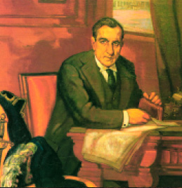

Ramiro de Maeztu
Contaba Eugenio Montes que, cuando en los años treinta, publicó un elogioso comentario sobre Ramiro de Maeztu, éste le suplicó que no hablase bien de él: «Es usted muy joven y no tiene derecho a que le cerque el silencio como a mí. Yo soy un leproso ». No exageraba un ápice el autor alavés. A raíz de su apoyo a la dictadura de Primo de Rivera, olvidar a Maeztu fue una consigna tácita, y los años no han hecho sino revalidarla una generación tras otra. Nadie quiere acordarse de Maeztu, ni dentro ni fuera del país de los vascos. Y sin embargo él funda, junto a Baroja y Azorín, el llamado «Grupo de los Tres», germen de la generación del 98. Tampoco a nadie le parece digno de recordar que Ramiro de Maeztu se convirtiese en uno de los pilares intelectuales, junto con Penty y Hume, del gremialismo inglés inspirado en los gilde o hermandades medievales. A. R. Orage, líder del socialismo guildista, se consideraba su discípulo.
Ramiro de Maeztu y Whitney nació en Vitoria en 1874. La ruina familiar le obligó a marchar a Cuba, en donde su familia había tenido un ingenio de azúcar, con sólo 17 años. Tras el fallecimiento de su padre, Ramiro regresa a Vitoria sin haber conseguido rehacer la economía familiar. Se trasladan entonces a Bilbao y allí inicia el mayor de los Maeztu sus colaboraciones periodísticas, actividad que no abandonará hasta su muerte.
Periplo intelectual
En 1897 se traslada a Madrid y allí se relaciona con Baroja, Azorín y otros escritores influídos por el regeneracionismo de Joaquín Costa. Para Maeztu, otra influencia decisiva será de Friedrich Nietzsche.
A principios de 1905 marcha a Londres, donde residirá durante 15 años y se convertirá en un adalid del corporativismo anglosajón, relacionándose además con personajes de la talla de Pound, Eliot o Shaw. Allí publicará, en 1916, su ensayo Authority, Liberty and Function, vertido al castellano posteriormente con el título de La crisis del humanismo.
En 1919 regresa a España para vincularse a la redacción del periódico El Sol. En 1926, revisita los mitos españoles en su ensayo Don Quijote, don Juan y la Celestina. Maeztu será uno de los pocos pensadores hispánicos (por no decir el único) que reflexione sobre un asunto casi siempre tabú: el dinero. El sentido reverencial del dinero, según algunos críticos, denota el ramalazo anglosajón de Maeztu.
Luego vendrán su mencionado apoyo a la dictadura primorriverista, su empleo de embajador en Buenos Aires y su Defensa de la hispanidad, en donde el primitivo socialista se convierte en el gran panegirista de la monarquía católica y, según algunos, en una suerte de fascista angloespañol.
Epitafio
Trece días después del estallido de la guerra civil española, Ramiro de Maeztu fue detenido en Madrid y fusilado sin juicio previo. Al saber la noticia, el novelista francés Gerorges Bernanos nos escribió en Le Figaro: «La muerte de Maeztu honra a todos los hombres que piensan, es decir, a los que tienen su pensamiento por mil veces más precioso que su vida».